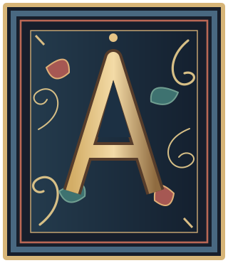
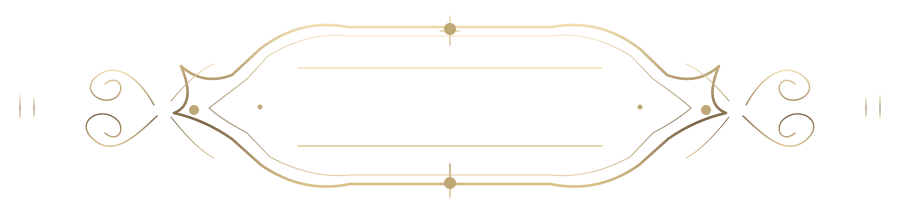
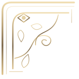
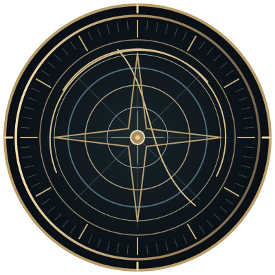

A · GRAND ATLAS
HISTORICAL ARCHIVE
ATLAS
문명 역사 아틀라스
세계 역사의 장
지도 제목 카르투슈, 조각 모서리, 판각형 단원 구분, 고지도 명패. 공통 쉘·대시보드·정치체 표제에 사용합니다.
원본 SVG 5종 + 재사용 가능한 scoped CSS · 데모 화면
이 페이지는 오직 장식 부품의 시각적 형태를 검토하기 위한 별도 정적 미리보기입니다. 실제 대시보드·시공간표·인물 데이터가 아니며, 운영 UI에는 아직 연결되지 않았습니다. 표제/folio 문구는 시안 설명이며 역사적 출처나 데이터베이스 ID가 아닙니다.
HISTORICAL ARCHIVE
ATLAS
문명 역사 아틀라스
지도 제목 카르투슈, 조각 모서리, 판각형 단원 구분, 고지도 명패. 공통 쉘·대시보드·정치체 표제에 사용합니다.
Spacetime chrome / ornament only
아스트롤라베에서 착안한 황동 눈금과 계측기구 외곽 장식. 실제 시간 데이터, 지도 좌표 또는 별자리의 표시가 아닙니다.

세속적 식물문과 장식 머리글자, 실제 초상화·활동 기록·출처를 감싸는 필사본 장정의 조형 시스템입니다.


